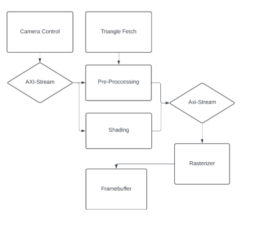
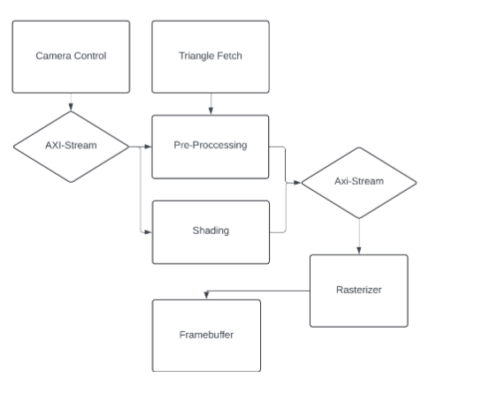
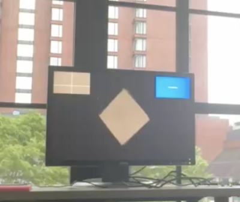
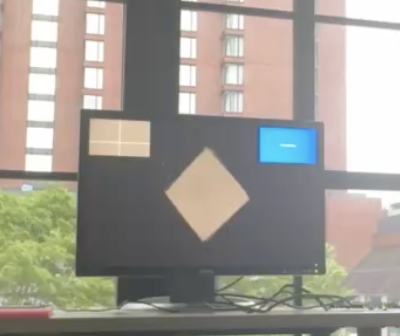

holoforge
Hand Controlled 3D Model Viewer on FPGA, it was sorta inspired by iron man
https://youtu.be/Jawq5mXmuF8"
 

This was our final project for MIT’s Digital Systems Class (6.111/6.2050). In this class, all the work was done in SystemVerilog and o Xilinx Spartan 7 FPGAs. The class concluded with an open-ended final project, and we decided to create a camera-controlled 3D model viewer that could render 3D meshes and change the view of the scene based on real-time camera inputs. We also decided(were forced) to utilize the offboard DDR3 RAM for our framebuffer to allow for better resolution down the line, also because we were already fully utilizing the BRAM for loading models.
 

We currently have successful rendering of 3D objects (like the cube shown) and the ability to change the view of the object based on the center of mass of all the blue pixels on the screen observed via an Adafruit camera hooked into the FPGA. We also have a “crosshair screen” that lets the user know what the center of mass of blue is (i.e., where their “virtual” cursor is). See the video above for a better explanation.
The reason we decided to use a MIG with AMBA AXI was that it made it easier to write out-of-order addresses to the MIG via a custom stacker we wrote. This stacker takes the 16-bit color values that come out of the graphics pipeline and stacks them into 128 bits (with varying strobes based on whether the data is in order) that get fed into the MIG. We have two frames in the DRAM for clearing and switching, and we have working view changes with the camera. For more information, read the report—note we implemented a portion of features after the class was over.